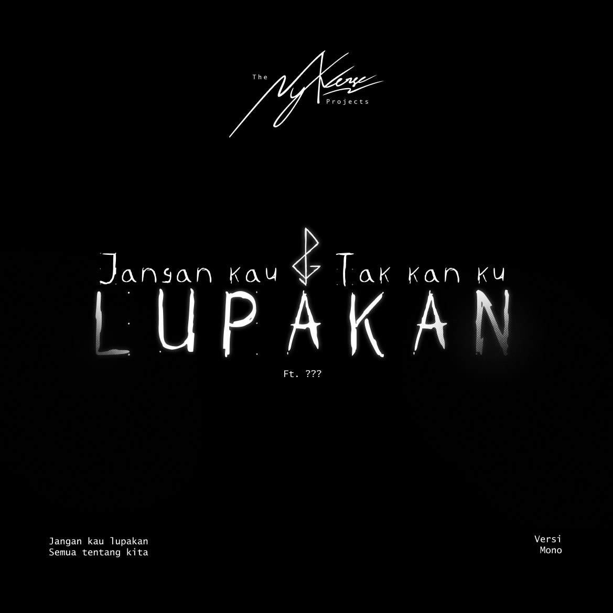
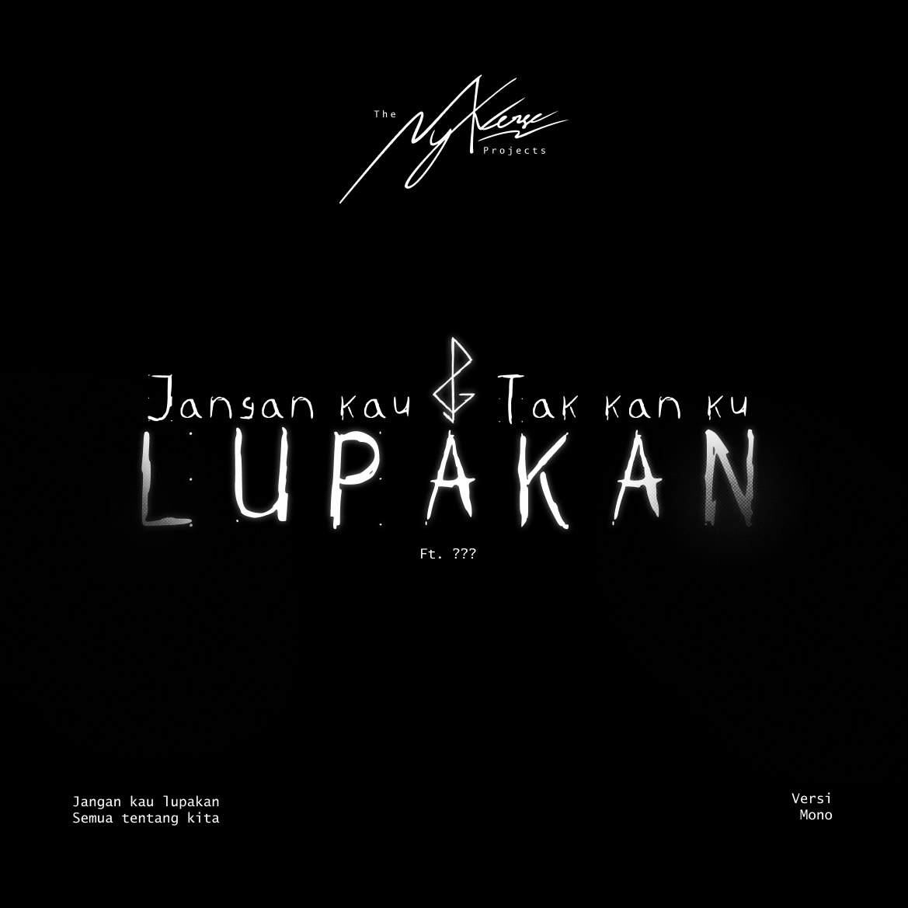

Hi, I'm Nyk. Through my work, I aim to build immersive experiences that blend music, storytelling, and visual art, drawing people into emotional landscapes that explore the struggles, resilience, and quiet moments that define us all. At the heart of my creative journey is the Pastel Galaxy Universe, a world I've developed across multiple albums and projects. Each piece — from Dikhianati Oleh Dunia, which reflects on the feeling of being let down by society, to Sky Lullaby, a lullaby of dreams and challenges — represents a piece of my own story while reaching out to connect with anyone who's ever felt unseen or misunderstood. In creating characters like Flower and Nikolas and placing them in worlds like Homefield, a space of quiet reflection, or Cryon's World, a dark mirror of inner traumas, I try to capture the realities of mental health and the unseen struggles we carry. These worlds aren't just fantasy; they're metaphors for the experiences we all share but sometimes find hard to express. I approach each project as a chance to dig deeper into what it means to be human, to bring comfort, and to let others know they're not alone in their journey. The Nyk Verse isn't just my world; it's a space for introspection and connection, a place where art, music, and story meet to form something personal yet universal.
Welcome to The Nyk Verse Project, where Visuals, Audio, and Literature became a brand new universe.